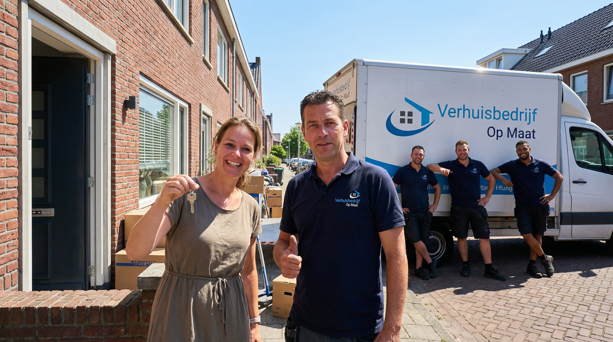

Verhuisbedrijf Gouda
Professioneel verhuizen in de kaasstad aan de Gouwe
Geen verplichtingen · Reactie binnen 2 uur

Verhuizen in Gouda: meer dan 20 jaar ervaring in de kaasstad
Gouda is wereldberoemd om zijn kaas, maar de stad heeft nog veel meer te bieden. Met een prachtige historische binnenstad, karakteristieke grachten en een groeiend aantal nieuwe woonwijken is Gouda een aantrekkelijke woonplaats in het Groene Hart. Verhuisbedrijf Op Maat kent Gouda door en door. Al meer dan 20 jaar verhuizen wij particulieren en bedrijven in alle wijken van de stad, van de smalle grachten in de binnenstad tot de ruime straten van Goverwelle en Bloemendaal. Wij weten hoe wij uw inboedel veilig door de krappe doorgangen van het centrum krijgen en hoe wij efficient werken in de nieuwere wijken. Verhuizen in Gouda is een van onze kernverhuisdiensten waar wij dagelijks mee bezig zijn.
- Dagelijks actief in alle wijken van Gouda
- Specialisatie in historische binnenstad en grachten
- Volledig verzorgde verhuizingen inclusief in- en uitpakken
Uw verhuizing in Gouda in vertrouwde handen
Ontdek waarom meer dan 1.000 klanten ons een 9+ beoordeling geven
Ervaren verhuizers
Al meer dan 20 jaar vakmanschap in het veilig verhuizen van uw inboedel in Gouda en omstreken.
All-in prijzen
Transparante tarieven zonder verborgen kosten of onverwachte toeslagen.
Snel en flexibel
Wij plannen de verhuizing volledig op uw schema, ook in het weekend of 's avonds.
Gratis materialen
Verhuisdozen, dekens en tape zijn bij onze service inbegrepen.
Vaste verhuizers, 20+ jaar ervaring
Gecertificeerde verhuizers die met zorg en respect te werk gaan.
9+ beoordeling
Meer dan 1.000 tevreden klanten geven ons een uitstekende score.

Wij kennen elke wijk in Gouda
Gouda is een stad met vele gezichten. De historische binnenstad rondom de Markt en de Sint-Janskerk kenmerkt zich door smalle grachten, krappe doorgangen en monumentale panden. Kort Haarlem, een van de oudste wijken, heeft vergelijkbare uitdagingen met smalle straten en etagewoningen. In contrast daarmee staan de ruimere wijken als Goverwelle, Bloemendaal en Plaswijck, met moderne eengezinswoningen en brede straten. En dan is er nog het pittoreske Stolwijk, een van de kernen die tot de gemeente Gouda behoren. Onze verhuizers kennen al deze buurten op hun duimpje. Zij weten waar de eenrichtingsstraten lopen, waar bruggetjes het gewicht van een verhuiswagen niet aankunnen en hoe zij uw inboedel het veiligst door een smal trappenhuis naar beneden tillen.
- Binnenstad: monumentale panden, grachten, krappe doorgangen
- Kort Haarlem: smalle straten, etagewoningen
- Goverwelle en Bloemendaal: ruime eengezinswoningen
- Plaswijck en Stolwijk: gezinsvriendelijke wijken

Verhuizen langs grachten en door smalle doorgangen in Gouda
De Goudse binnenstad behoort tot de mooiste van Nederland, maar verhuizen in dit historische decor brengt unieke uitdagingen met zich mee. Smalle grachtenpanden met steile trappen, lage deurposten en beperkte parkeermogelijkheden vragen om ervaren verhuizers die weten wat zij doen. Ons team heeft jarenlange ervaring met verhuizingen in dit type panden. Wij beschermen de monumentale trappenhuizen met professioneel materiaal, manoeuvreren behoedzaam door krappe bochten en zetten indien nodig een verhuislift in om grote meubels via het raam te verplaatsen. Gouda is een groeiende stad die steeds meer inwoners aantrekt, en wij groeien mee door onze service continu te verbeteren.
- Ervaring met monumentale grachtenpanden
- Bescherming van historische trappenhuizen en deurposten
- Verhuislift beschikbaar voor verhuizing via het raam
- De- en montage van meubels inbegrepen
Verhuizing in Gouda gepland? Wij regelen het!
Ontvang binnen 24 uur een vrijblijvende offerte op maat, zonder verborgen kosten.
Geen verplichtingen · Reactie binnen 2 uur
- ✓ Gratis taxatie
- ✓ All-in prijzen
- ✓ 20+ jaar ervaring

All-in verhuistarief voor Gouda zonder verrassingen
Bij Verhuisbedrijf Op Maat werken wij met vaste all-in prijsopties voor uw verhuizing in Gouda. Onze taxateur komt gratis bij u langs voor een inventarisatie van uw inboedel en bekijkt de situatie ter plaatse: hoe breed zijn de trappen, liggen er grachten in de weg, hoe ver is het lopen naar de verhuiswagen? Op basis daarvan ontvangt u een definitieve offerte. De prijs die wij afspreken is de prijs die u betaalt. Geen toeslag voor verhuisdozen, geen extra kosten voor het sjouwen via trappen, en geen verrassingen achteraf. Gouda is uitstekend bereikbaar via de A12 (Den Haag-Utrecht) en de A20 (Rotterdam-Gouda), waardoor onze verhuiswagens snel ter plaatse zijn. Neem contact op voor een vrijblijvend adviesgesprek.
- Gratis taxatie op locatie in Gouda
- Vaste all-in prijs, geen verrassingen achteraf
- Verhuizers, wagen, materialen en dozen inbegrepen
- Bereikbaar via A12 en A20
Zo verloopt uw verhuizing in Gouda
Contact
Neem contact op voor een vrijblijvend adviesgesprek over uw verhuizing
Taxatie
Gratis inventarisatie bij u thuis in Gouda en offerte op maat
Planning
Wij plannen uw verhuisdag tot in detail, inclusief parkeerontheffing
Verhuisdag
Ons team verhuist u snel en zorgvuldig vanuit of naar Gouda
Nazorg
Uitpakken, plaatsen en gratis ophalen van verhuismateriaal

Meer dan alleen verhuizen in Gouda
Naast particuliere verhuizingen bieden wij in Gouda ook bedrijfsverhuizingen voor het diverse bedrijfsleven in de stad, seniorenverhuizingen met extra zorg en geduld, professionele woningontruimingen en tijdelijke opslag in onze beveiligde loods in Wateringen. Gouda groeit gestaag en trekt steeds meer nieuwe bewoners aan, zowel jonge gezinnen als senioren die de drukte van de grote stad willen ontvluchten. Wij helpen elke bewoner met een verhuizing die past bij hun situatie en wensen.
- Seniorenverhuizingen met extra aandacht en geduld
- Bedrijfsverhuizingen met minimale downtime
- Tijdelijke opslag in beveiligde loods in Wateringen
- Professionele woningontruimingen

Parkeren en bereikbaarheid bij uw verhuizing in Gouda
Gouda ligt op een strategisch kruispunt van de A12 (Den Haag-Utrecht) en de A20 (Rotterdam-Gouda). Vanuit ons kantoor in Den Haag zijn wij via de A12 in circa 30 minuten ter plaatse. Parkeren in de binnenstad kan lastig zijn door de smalle grachten en beperkte ruimte. Wij adviseren u tijdig over het aanvragen van een parkeerontheffing bij de gemeente Gouda, zodat onze verhuiswagen zo dicht mogelijk bij uw woning kan staan. In de buitenwijken als Goverwelle, Bloemendaal en Plaswijck is parkeren doorgaans geen probleem dankzij de ruime opzet van deze wijken.
- Strategische ligging op kruispunt A12 en A20
- Advies over parkeerontheffing bij gemeente Gouda
- Ruime parkeermogelijkheden in buitenwijken
- Snel ter plaatse vanuit ons kantoor in Den Haag
Wat onze klanten zeggen
Meer dan 1000 tevreden klanten gingen u voor.
"Perfect en snelle service. Communicatie uitstekend en gaan heel zorgvuldig en netjes om met je spullen. TOP BEDRIJF EN TOP TEAM!!!"
"Hele fijne contact gehad met Ricardo. Vanaf het eerste telefoontje tot aan de laatste meubel die netjes en geseald werd gebracht. Zeker aanraders!"
"Wat een goede service! Begon al met het eerste contact via Ricardo, echt een vriendelijke kerel. Benny en Ibrahim zijn harde werkers. De service is echt super!"
"Ik kan dit verhuisbedrijf van harte aanbevelen! De verhuizers werkten zeer hard en gingen met de grootste zorg om met onze spullen."
"Perfect verhuisbedrijf! Heel professioneel, klantgericht en vriendelijk! Ik heb alleen maar positieve ervaringen!"
"De verhuizing werd volledig verzorgd. Drie verhuizers werkten ontzettend hard en alles zonder beschadigingen. Kwetsbare spullen werden netjes geseald."
Alles over verhuizen in Gouda
Wat kost een verhuizing in Gouda?
De kosten van een verhuizing in Gouda hangen af van het volume (m3), de afstand naar uw nieuwe woning en eventuele extra diensten zoals inpakservice. Bekijk onze tarievenpagina voor een indicatie. Gouda is goed bereikbaar via de A12 en A20, waardoor onze aanrijkosten beperkt blijven. Na een gratis taxatie ontvangt u een all-in offerte zonder verborgen kosten.
Hoe verhuizen jullie in de Goudse binnenstad met grachten en smalle straten?
Onze verhuizers hebben ruime ervaring met de krappe doorgangen en grachten van de Goudse binnenstad. Wij zetten indien nodig een kleinere verhuiswagen in en gebruiken steekwagens en dolly's om efficient te werken in krappe ruimtes. Grote meubels die niet door het trappenhuis passen, verhuizen wij via het raam met behulp van een verhuislift.
Hebben jullie ervaring met etagewoningen in Gouda?
Ja, veel woningen in de Goudse binnenstad en Kort Haarlem zijn etagewoningen met steile, smalle trappen. Onze verhuizers zijn getraind in het veilig dragen van meubels via dit soort trappenhuizen. Wij beschermen trapleuningen, muren en deurposten met professioneel materiaal om schade te voorkomen.
Regelen jullie een parkeervergunning voor de verhuizing in Gouda?
In de binnenstad en veel wijken van Gouda is een parkeervergunning of ontheffing nodig voor een verhuiswagen. Wij adviseren u over de aanvraagprocedure bij de gemeente Gouda en zorgen ervoor dat onze verhuiswagen op de verhuisdag zo dicht mogelijk bij uw woning kan staan. Vraag tijdig aan, bij voorkeur twee weken vooraf.
Bieden jullie ook opslag aan bij een verhuizing in Gouda?
Ja, wij beschikken over een beveiligde opslagloods in Wateringen. Ideaal als uw nieuwe woning nog niet klaar is of als u tijdelijk ruimte nodig heeft tussen twee woningen. U kunt de opslag flexibel huren, van enkele dagen tot meerdere maanden.
Hoe snel kan ik een verhuizing in Gouda inplannen?
Bij voldoende beschikbaarheid kunnen wij uw verhuizing binnen enkele dagen inplannen. Heeft u haast? Bekijk ook onze spoedverhuizing: wij staan zelfs binnen 24 uur klaar, 7 dagen per week. Neem telefonisch contact op voor de actuele beschikbaarheid.
Gerelateerde diensten
Naast verhuizingen in Gouda helpen wij u ook met deze diensten
Seniorenverhuizing
Verhuizen met extra geduld en persoonlijke begeleiding. Van inpakken tot inrichten in de nieuwe woning.
Meer informatie →
Opslag
Tijdelijke opslag nodig tussen twee woningen? Onze beveiligde loods in Wateringen staat klaar.
Meer informatie →
Spoedverhuizing
Onverwacht snel moeten verhuizen? Wij staan binnen 24 uur klaar, 7 dagen per week.
Meer informatie →Gratis offerte aanvragen
Vul het formulier in en ontvang binnen 24 uur een vrijblijvende offerte voor uw verhuizing in Gouda.
Bedankt voor uw aanvraag!
Wij hebben uw aanvraag in goede orde ontvangen. Binnen 24 uur nemen wij contact met u op.